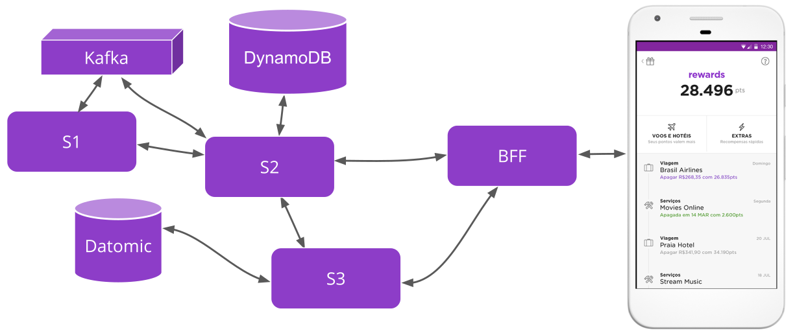

GraphQL como query language para BFF
Marina Limeira
Engenheira de Software @ Nubank
marinalimeira.comCartão
NuConta
Rewards
micro-serviços 💜

micro-serviços 💔

Backend for front-end (bff)
Backend for front-end (bff)
Abrams (Shuffle - backoffice)
Shore (Shell - novo app)
Stormshield (Ghostflame - Nuconta)
Queries
Queries
query {
customer {
id
savingsAccount {
id
branch
number
checkDigit
}
}
}
Queries
{
"data": {
"customer": {
"id": "3a7ac861-0814-4e53-8df9-4bae02d309ba",
"savingsAccount": {
"id": "afe0a604-fba9-4d06-bc81-278494618c55",
"branch": 0001,
"number": 12345,
"checkDigit": 6,
}
}
}
}
Resolvers
(def skeleton
{:SavingsAccount {:id {:type :Uuid}
:branch {:type :Int}
:number {:type :Int}
:check-digit {:type :Int}
:Customer {:id {:type :Uuid}
:savingsAccount {:type :SavingsAccount
:resolve :get-savings-account}})
(def queries-resolver
{:get-savings-account get-savings-account})
(defn get-savings-account [context customer _])